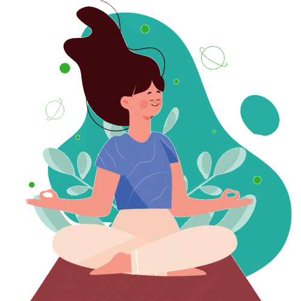

Apa sih isinya?

BAB V
TERAPI KOMPLEMENTER YOGA PADA MASA NIFAS
A. Yoga pada ibu nifas
Menurut Sindhu., Pujiastuti, 2018 Postnatal yoga adalah metode self help untuk seorang ibu selalu terhubung dengan dirinya, kesadarannya, fitrahnya, baik pada saat merasa berenergi dan penuh semangat, juga saat lelah atau tertekan. Yoga dapat membantu menurunkan tingkat stress, emosi dan meningkatkan stamina. Hal terpenting dalam berlatih yoga, yaitu teknik pernapasan, menyelaraskan napas dapat memberikan oksigen pada seluruh tubuh yang memberikan efek ketenangan pikiran (Sophia, Fitri Nurhayati, Flora Honey Darmawan 2022).

B. Manfaat
- Mengurangi rasa nyeri secara fisik
- Indikasi
- Membantu proses penyembuhan dari sakit dan membantu meningkatkan kualitas hidup (Woodyard, 2011 dalam (Winarni, Ikhlasia, dan Sartika 2020)
- Mempercepat proses penurunan fundus dan lochea
- Melancarkan sirkulasi darah ke rahim
- Uterus berkontraksi dengan baik
- Mencegah perdarahan (Mu'alimah et al. 2022)
C. Kontra Indikasi
-
Kontradiksi
- Ibu nifas yang mengalami komplikasi selama persalinan
- Ibu yang mengalami tanda - tanda bahaya selama nifas
- Ibu yang mengalami kelainan ginjal, jantung dan paru - paru
-
Indikasi
- Ibu nifas hari ke 7
- Ibu yang melahirkan secara spontan ataupun sectio caesarea tanpa adanya komplikasi (Rahyani N.K.Y., Ni Gusti Made Ayu Agung Budhi 2024)
D. Evidence Based
Menurut penelitian yang dilakukan oleh Kadek Sri Ariyanti., et.al, 2023, Yoga post natal sangat baik dilakukan untuk mengurangi kecemasan ibu pasca melahirkan karena memberikan beberapa manfaat diantaranya:
-
Mengurangi ketegangan otot bahu dan leher
-
Menenangkan pikiran dan mengurangi stress
-
Meningkatkan kualitas tidur
-
Meningkatkan produksi ASI
Penatalaksanaan yoga post natal pada ibu pasca melahirkan sebaiknya diberikan sebagai salah satu upaya untuk meningkatkan kesehatan fisik dan psikologis ibu, meningkatkan produksi ASI, sehingga dapat meningkatkan derajat kesehatan ibu dan bayi (Ariyanti et al. 2023). Jurnal ini dapat di akses pada link
Click disiniE. Standar Operasional Prosedur
| STANDAR OPERASIONAL PROSEDUR (SOP) | |
|---|---|
| POST NATAL YOGA | |
| PENGERTIAN | Yoga adalah metode self help untuk seorang ibu selalu terhubung dengan dirinya, kesadarannya, fitrahnya, baik pada saat merasa berenergi dan penuh semangat, juga saat lelah atau tertekan. Yoga dapat membantu menurunkan tingkat stress, emosi dan meningkatkan stamina. |
| TUJUAN |
|
| INDIKASI |
|
| PROSEDUR |
|
| PROSEDUR |
|
| PROSEDUR |
|

| PROSEDUR |
|

| PROSEDUR |
|
| PROSEDUR |
|

| PROSEDUR |
|

| PROSEDUR |
|
| PROSEDUR |
|
| PROSEDUR |
|

| PROSEDUR |
|

| PROSEDUR |
|

| EVALUASI |
|